- ホーム
- 医院情報｜医院概要・アクセス
Summary渋谷ルーブル歯科・矯正歯科の医院情報
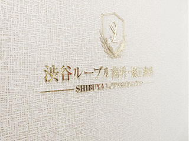
渋谷駅近くの「渋谷ルーブル歯科・矯正歯科」は、平日や土曜はもちろん隔週の日曜も診療する通いやすい歯科医院です。歯並びや噛み合わせを整える矯正治療だけでなく、虫歯や歯周病の治療、セラミックなどを使った白く美しい人工歯による「審美治療」、天然歯のホワイトニングにも対応します。こちらでは、医院概要と診療時間、アクセスをご案内します。またお支払いについてもご説明しますのでご覧ください。
医院概要
| 医院名 | 医療法人 清翔会 渋谷ルーブル歯科・矯正歯科 |
|---|---|
| 院長名 | 水谷倫康 |
| 所在地 | 〒150-0041 東京都渋谷区神南一丁目20番17号 BC神南 PROPERTY 6F |
| 電話 | 03-6455-2383 |
| FAX | 03-6455-2384 |
| 最寄り駅 | 渋谷駅 |
法人の方へ
法人へのご連絡は下記にお願いいたします。
| 電話 | 052-414-5571（法人の方向け） ※こちらはご予約の連絡先ではありません |
|---|---|
| FAX | 052-453-2100 |
| メールアドレス | seishokai.office@gmail.com |
| 担当 | 小池 拓未（事務） |
診療時間

アクセス
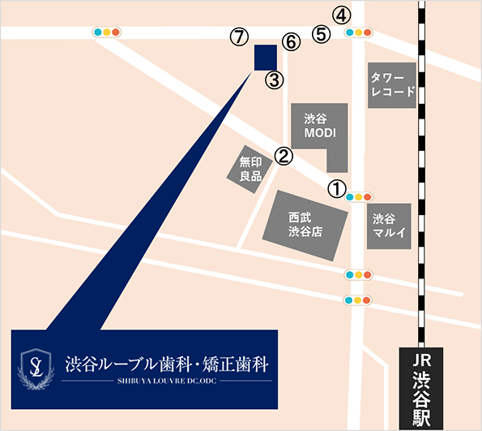
渋谷方面からお越しの場合（①②③）
-
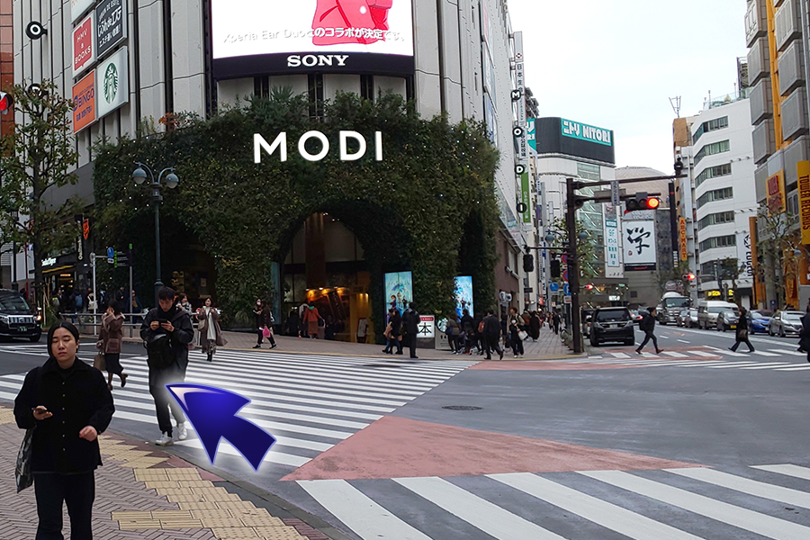
①渋谷モディを左折してください。
-
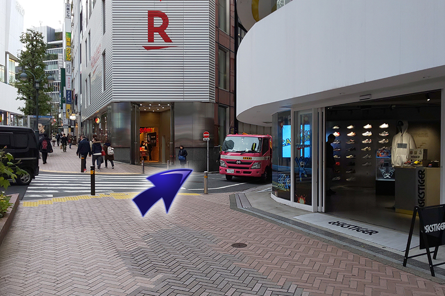
②Rと書かれたビルを右折してください。
-
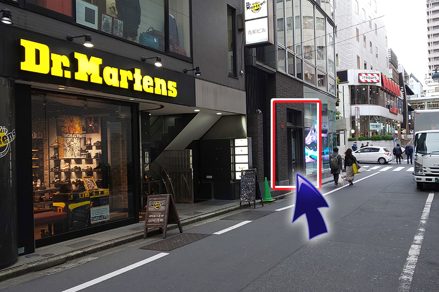
③左手に入口があります。
-
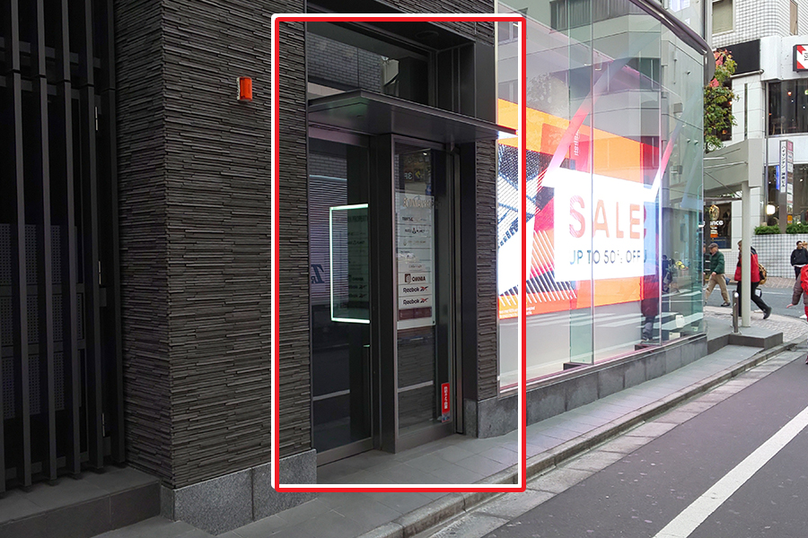
当医院の入口になります。エレベーターで6階までお越しください。
北方面からお越しの場合（④⑤⑥）
-
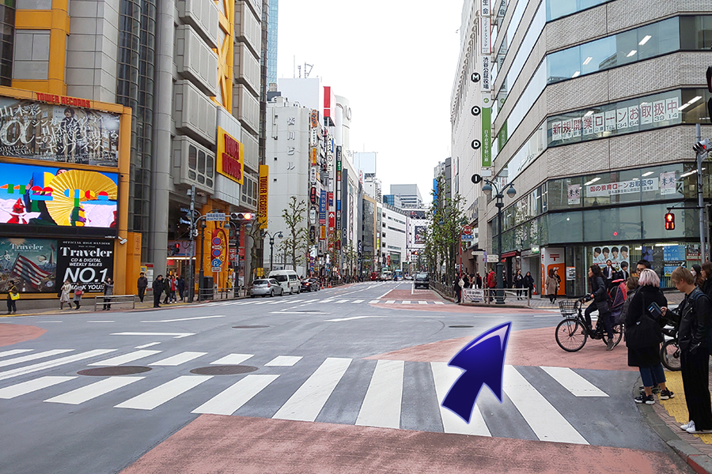
④タワーレコードの交差点（神南郵便局前）を右折してください。
-
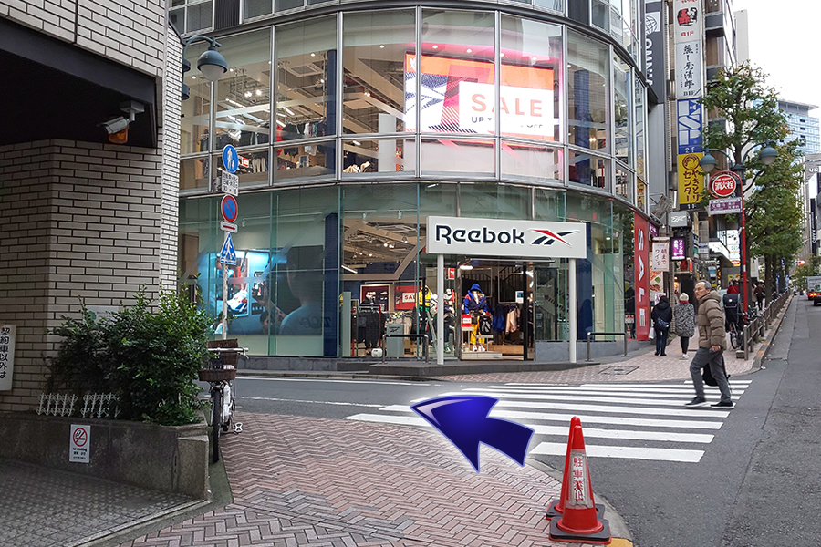
⑤リーボックを左折してください。
-
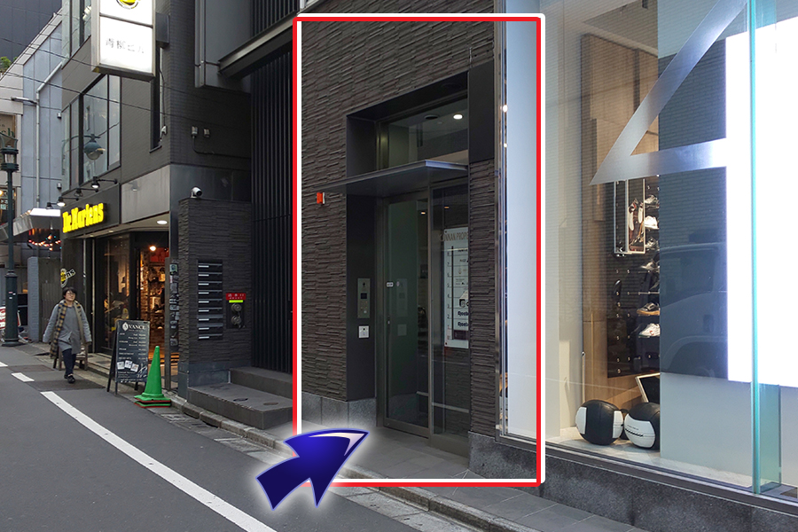
⑥右手に入口が見えてきます。
-
当医院の入口になります。エレベーターで6階までお越しください。
パルコ方面からお越しの場合（⑦⑥）
-
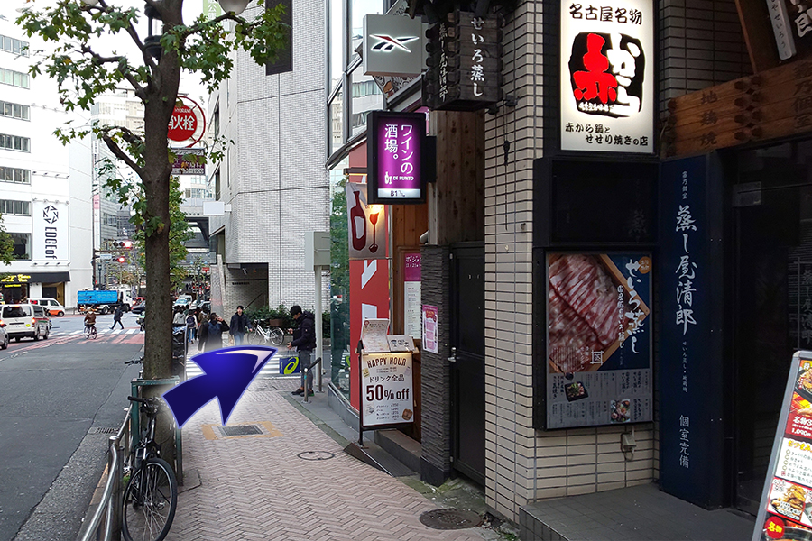
⑦ワインの酒場。が見えてきますので右折してください。（角にリーボックがあります。）
-
⑥右手に入口が見えてきます。
-
当医院の入口になります。エレベーターで6階までお越しください。
グループ医院紹介について


お支払いについて
歯科診療の中でも自費診療の治療を受ける際に、まず知っておきたいのは費用のことではないでしょうか？ 渋谷駅すぐの歯医者「渋谷ルーブル歯科・矯正歯科」では治療計画の作成の際に、丁寧なカウンセリングをおこない、費用をご提示しますので安心です。お支払いは、現金のほか、クレジットカード・分割支払い、そしてアプラスデンタルローンもご利用いただけます。
クレジットカード分割支払いがご利用いただけます
自費診療の治療費用のお支払いはクレジットカードや分割支払いをご利用いただけます。支払い回数や金利など詳しくはお気軽にスタッフまでお問い合わせください。
※保険診療の費用のお支払いはクレジットカードのご利用はできません。ご了承ください。
対応クレジットカード
・VISA ・MASTER ・アメリカンエクスプレス ・JCB ・Life Card ・銀聯カード ・セゾン ・DC ・NICS ・UFJ card ・DIXCOVER ・Diners Club など
アプラスデンタルローンをご紹介します
デンタルローンとは、歯科医療費をアプラスが患者様に代わって立替払いするローン契約です。ご希望に合わせた分割回数のお支払いプランをお選びいただけます。
- 利息2年分は当院が負担します
利息を2年（24回）分までは当院で負担いたします。2年のローン契約の場合、実質利息はかかりません。なお、25回目以降（2年を超える場合）の利息はご負担いただきます。
- Tポイントが貯まります
矯正装置費用200円につき1ポイントのTポイントが貯まります。例えば、矯正装置費用が80万円のデンタルローンご成約の場合には、4,000ポイント貯まります。
特長
1 手続きがかんたん
WEBでお申し込みいただけます。その際にはご印鑑・収入証明・身分証明は不要です。
2 医療費控除の対象
デンタルローンご利用金額すべてが医療費控除の対象となります。医療費控除の金額には上限がありますので、詳しくは下記をご覧ください。
医療費控除について
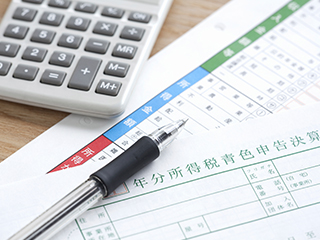
家計を1つにする家族が1年間に支払った医療費の合計が10万円（総所得が200万円未満の場合は、総所得の5％）を超えた場合、確定申告をおこなうと一定の税金還付を受けられるシステムです。歯科医療の矯正治療も診断書があれば控除対象です。
対象となる医療費
病気の治療や療法目的の医療費は医療費控除の対象となります。ただ美容目的の処置は対象外です。電車やバス、タクシーを利用した通院のための交通費や治療用の医薬品購入費も認められる場合がありますので、詳しくはお気軽にお問い合わせください。
医療費控除額の計算方法
（1/1～12/31の1年間の医療費の合計）-（保険金で補填される金額）-10万円（※）
※総所得が200万円未満の場合は、総所得の5％
【医院情報】